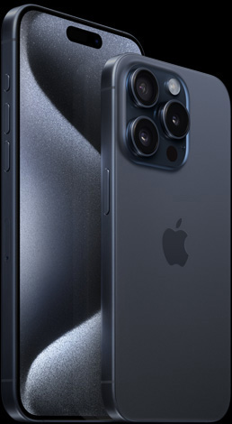
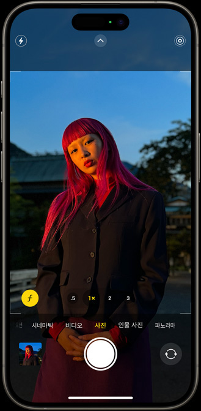
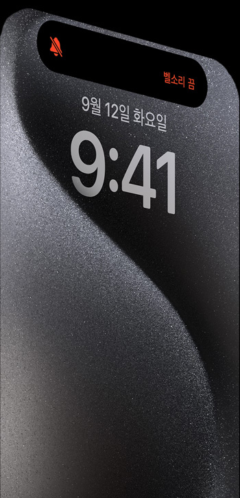

iPhone 11 이상의 모델을 보상 판매하면 iPhone 15 Pro 구입 시 사용할
수 있는
₩220,000 ₩990,000 상당의 크레딧이. * 구입하기>
₩220,000 ₩990,000 상당의 크레딧이. * 구입하기>
iPhone 15 Pro
일단 핵심부터.
동영상 보기 >
A17 Pro 등장.
게임의 판도를 바꾸는 칩.
획기적인
성능.

보다 자세히 들여다보기.

블루 티타늄 색상 iPhone 15 Pro
본격적으로 탐구해 보기.
iPhone.
티타늄을 두르다
티타늄을 두르다


상상 이상의 디테일까지
포착해 주는 카메라.
포착해 주는 카메라.
비약적으로 유연해진 프레임 옵션부터 한 차원 높은 수준의 인물
사진까지, iPhone 사상 가장
강력한 카메라 시스템이 만들어내는 놀라운 이미지를 소개합니다.
강력한 카메라 시스템이 만들어내는 놀라운 이미지를 소개합니다.

A17 Pro 칩.
게임 평정, 괴물 프로세서.
게임 평정, 괴물 프로세서.
마침내 Apple GPU 사상 가장 큰 변화가 찾아왔습니다.
역대 최고의 그래픽 성능을 갖춘
A17 Pro는 다른 어떤 iPhone 칩과도
비교할 수 없는 독보적인 칩입니다.
A17 Pro는 다른 어떤 iPhone 칩과도
비교할 수 없는 독보적인 칩입니다.
엄청나게 디테일한 배경과 살아 숨쉬는
듯한 캐릭터로 모바일 게임을 즐길 때도
생생한 그래픽과 몰입감 넘치는 플레이
경험을 만끽할 수 있게 해주죠. 여기에 업계
최고 수준의 속도와 효율성까지 갖춘
A17 Pro. 무슨 일이든 쏜살같은 속도로
해치웁니다.
듯한 캐릭터로 모바일 게임을 즐길 때도
생생한 그래픽과 몰입감 넘치는 플레이
경험을 만끽할 수 있게 해주죠. 여기에 업계
최고 수준의 속도와 효율성까지 갖춘
A17 Pro. 무슨 일이든 쏜살같은 속도로
해치웁니다.
새로운
Pro급 GPU
6코어 탑재
Pro급 GPU
6코어 탑재
iPhone 15 Pro는 다양한 초점 거리를
지원합니다. 7개의 프로급 렌즈를
주머니에 쏙 넣어 어디든 갖고 다닐 수 있게
된 거나 다름없죠.
지원합니다. 7개의 프로급 렌즈를
주머니에 쏙 넣어 어디든 갖고 다닐 수 있게
된 거나 다름없죠.


그 어느 때보다 앞선 성능을 자랑하는
48MP 메인 카메라. 덕분에 새로운 차원의
디테일 및 색상 표현력이 돋보이는
초고해상도 사진을 촬영할 수 있죠.
48MP 메인 카메라. 덕분에 새로운 차원의
디테일 및 색상 표현력이 돋보이는
초고해상도 사진을 촬영할 수 있죠.
향상된 성능은 인물 사진을 찍을 때 빛을
발합니다. 더 이상 인물 사진 모드로 일일이
전환할 필요 없이, 피사체가 사람 혹은
강아지, 고양이 같은 반려동물인 경우
iPhone이 자동으로 심도 정보를
포착합니다. 그래서 촬영 중에 인물
사진처럼 흐림 효과가 아름답게 배경에
적용된 상태를 확인하면서 찍을 수 있고,
촬영 후에 ‘사진’ 앱에서 인물 사진으로
바꾸는 것도 가능하죠.
발합니다. 더 이상 인물 사진 모드로 일일이
전환할 필요 없이, 피사체가 사람 혹은
강아지, 고양이 같은 반려동물인 경우
iPhone이 자동으로 심도 정보를
포착합니다. 그래서 촬영 중에 인물
사진처럼 흐림 효과가 아름답게 배경에
적용된 상태를 확인하면서 찍을 수 있고,
촬영 후에 ‘사진’ 앱에서 인물 사진으로
바꾸는 것도 가능하죠.
마법 같은 공간 동영상을 촬영하고 그 순간을
Apple Vision Pro에서 생생하게 다시 경험하세요.
Apple Vision Pro에서 생생하게 다시 경험하세요.
초점 거리 120mm의
완벽한 프로급 줌.
완벽한 프로급 줌.

iPhone 15 Pro Max의 콤팩트한 프로급
카메라 시스템에는 그 어떤 iPhone
모델보다 높은 배율의 광학 줌을 지원하는
5배 망원 카메라가 탑재되어 있습니다.
카메라 시스템에는 그 어떤 iPhone
모델보다 높은 배율의 광학 줌을 지원하는
5배 망원 카메라가 탑재되어 있습니다.
덕분에 이제
훨씬 먼 거리에서도 더 선명한
클로즈업 사진을 찍을 수 있죠. 수려한
경관을 배경으로 서있는 친구의 모습이나
축구 경기에서 골을 넣은 아이의 모습을
또렷하게 담아보세요.
클로즈업 사진을 찍을 수 있죠. 수려한
경관을 배경으로 서있는 친구의 모습이나
축구 경기에서 골을 넣은 아이의 모습을
또렷하게 담아보세요.
5배 광학 줌 120mm 렌즈
즐겨 쓰는 기능,
동작 버튼으로
바로.
동작 버튼으로
바로.
새로운 동작 버튼은즐겨 쓰는 기능을
빠르게 실행시켜 주는 단축키라고 할 수
있습니다. 원하는 기능으로 설정해 두면,
동작 버튼을 길게 누르는 것만으로 해당
동작이 실행되죠.
빠르게 실행시켜 주는 단축키라고 할 수
있습니다. 원하는 기능으로 설정해 두면,
동작 버튼을 길게 누르는 것만으로 해당
동작이 실행되죠.

기가 막히게 빠른
기가급 전송.
기가급 전송.